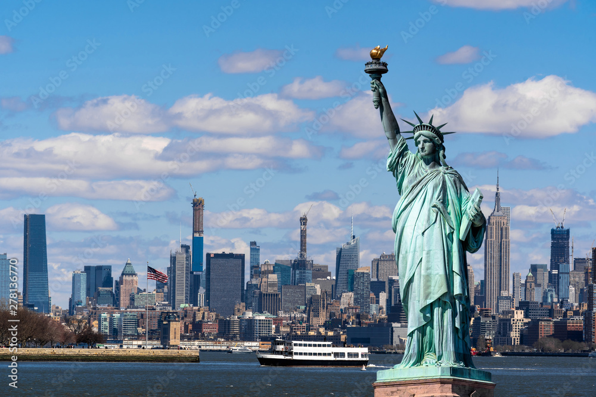
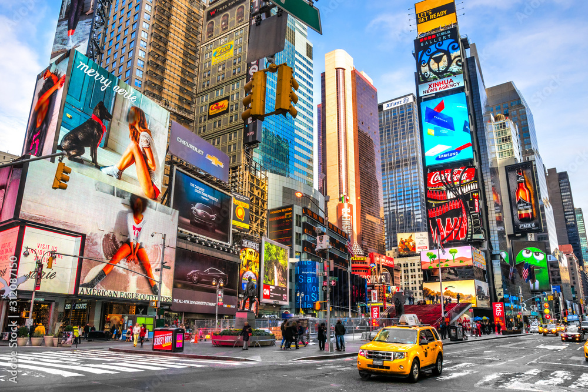

The Statue of Liberty is one of the most iconic symbols of freedom in the world. It stands on Liberty Island and was a gift from France in 1886.
Times Square is known for its bright lights, big screens, and Broadway shows. It's a busy and exciting part of Manhattan that many people visit day and night.
